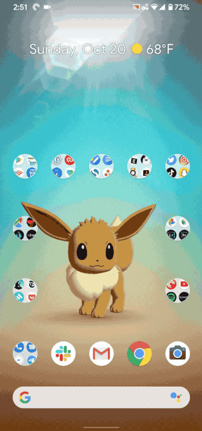
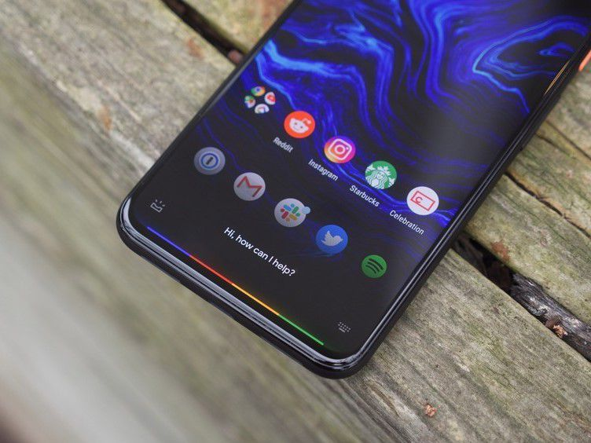

Photography by Amelia Holowaty Krales, Vjeran Pavic, Mariya Abdulkaf, and Michele Doying | Video by Vjeran Pavic, Brennan King, Phil Esposito, Grayson Blackmon, Andrew Marino, William Joel, and Becca Farsace
The Pixel 4 and Pixel 4 XL are the best argument that specs don’t tell you everything you need to know about a phone — because the experience of using a Pixel 4 is better than any other Android phone.
There is a nuanced difference between saying “specs don’t tell you the whole story” and “specs don’t matter,” because they absolutely do — if only because the wrong ones can ruin the whole thing. There are a few places where Google could have done better, especially with battery life. But overall the Pixel 4 hits enough of the marks to pass, and it’s a few new features from Google that push the experience ahead of the pack.
The Pixel 4 starts at $799 for the smaller 5.7-inch screen version with 64GB of storage. I suspect many users will pay the $100 for the XL version with the bigger screen, the $100 more for 128GB of storage, or both. I am sympathetic to arguments that the specs don’t quite justify those prices, but only to a point. With the Pixel 4, the cost isn’t about the hardware — it’s about Google’s software, camera, and those new features.
Most new phones try to layer on one or two new features year over year. But the Pixel 4 has at least five major new hardware-based features: face unlock, Motion Sense, the new Google Assistant, the new 90Hz display, and a second telephoto camera lens. It’s also available on all four major US carriers for the first time.
Google completely changed the design language of the Pixel this year. If I had to pick a standout design element, I’d go with the aluminum rail around the edge. It’s painted black metal, rounded simply with a matte
finish. That helps significantly with grip but also makes it stand out — the rails are black whether you have the black, orange, or white model. Something about the look reminds me of thick, heavy Buddy Holly-style eyeglasses.
Even though the Pixel 4 shares the iPhone 11’s square camera bump, the overall design and aesthetic is unique and feels of a piece with the Pixel’s lineage. Google is leaning into the contrasts of its material and colors instead of trying to meld
them into something that feels like a single whole.
All three colors have Gorilla Glass 5 on the back, but the white and orange models have matte finishes, and I much prefer them to the glossy finish on the black model. The orange has coral tones to it, depending on the light, and it’s also limited-edition
for some reason.
After releasing a phone with a hilariously huge notch last year, Google is going back to a notchless, big top bezel design. That’s ostensibly so it can fit both its face unlock and radar sensors up top, but I do wonder if Google just wanted to
make life easier on itself this time around. I don’t mind the look, but it does mean the front of the phone is asymmetrical: the top, bottom, and sides all have different bezel widths. You’ll notice it and then you will stop noticing it and
then it will be fine.
There are some nice small details, though. The corner radiuses on the screen are larger and actually come closer to matching the radiuses on the phone itself (they even subtly cut off 21:9 video, just like on the iPhone 11 Pro). The power button
has a nice pop of color on it.
The Pixel 4 does not have a headphone jack, of course, but it does at least have a USB-C port that doesn’t require headphone makers to pay a licensing fee to access. Weirdly and annoyingly, Google doesn’t include either headphones or an adapter
in the box anywhere except France and Australia.
Face Unlock
On a technical level, the new face unlock feature works very much like the iPhone’s Face ID does. It has a projector that shoots out a broad array of infrared dots, and cameras that see those dots. It works in any
lighting condition, and you can’t trick it with a photograph or a video like you can on Samsung or OnePlus’ face unlock systems (I tried).
The Pixel 4’s method may be more secure than other Android-based face unlock technology, but it’s not as secure as Apple’s — yet. The Pixel 4 doesn’t care if your eyes are open or closed, which means that somebody could unlock your phone by holding
it up to your face as you slumber.
On the eve of this review publishing, Google finally committed to issuing a software update that would
add eye detection to face unlock. Unfortunately, the only timeline it would give is “in the coming months.” In the meanwhile, the most secure choice to lock a Pixel 4 remains a long passcode. The other option is remembering to turn on and
hit the “lockdown” button in the power menu if you’re concerned somebody might try to unlock it with your face.
Face unlock works just like the fingerprint sensor did for biometric authentication — it maps to unlocking, authorizing purchases, and so on — or at least it should once more apps update to support it. But it is wildly more convenient and easy
to use. It feels completely seamless and I don’t ever want to go back to any kind of fingerprint sensor, in-screen or wherever else.
Google is touting face unlock as being super fast and it is, though on a technical level I think that the actual registering and unlocking is the same speed as on the iPhone. The reason the Pixel’s face unlock feels so fast is that when you pick
up the phone, it simply jumps right into what you were doing before without requiring you to tap or swipe on the screen at all. (You can change this with a setting.)
The other reason that face unlock feels fast is a clever use of Google’s other new sensor technology in the Pixel 4: the Motion Sense radar chip.
Motion Sense
Motion Sense is based on a technology Google has been developing for years called Project Soli.
It’s radar on your phone, literally, and in theory it could enable incredibly interesting ways to interact with software. It can apparently detect movement as subtle as the flutter of a butterfly wing, and potentially even your heartbeat.

You can wave at or pet five different Pokémon on custom wallpapers using Motion Sense.
You can wave at or pet five different Pokémon on custom wallpapers using Motion Sense.
It could do all that, but in this very first use of the technology, it does not. Google has only chosen to implement three types of movements for Motion Sense to detect, and they’re all very broad gestures.
The most obvious way Motion Sense is being used on the Pixel 4 is to let you wave your hand above the screen to skip tracks when music is playing. And, unfortunately, this feature is the flakiest. I’ve figured out that it works best when the phone
is sitting flat on the table. It can only read swipes that are perpendicular to the top of the Pixel, where you’ll see a very subtle light bar at the top of the screen that serves as the only visual indicator that you’re doing it right.
Once I figured out that it requires a clean sweep across the entire top of the phone, though, I really liked using it. As I’m sitting here right now typing on my laptop, I can simply swing my left hand out quickly to skip tracks without having
to look for the right button.
The second thing Motion Sense does is detect your presence. The radar forms a bubble over the phone, and if you move outside it, the always-on display turns off.
Lastly, the third and best thing Motion Sense can do is tell if you’re reaching for the phone. As your hand approaches, the phone can react and start doing something before you grab it.
It works on ringtones and alarms. When one of them goes off and you reach for the phone to see what’s up, it immediately quiets the phone down a little. Then you can swipe to mute the ringtone or snooze the alarm.
Reach detection does one more thing — it lights up the face unlock sensors right away, so it can look for your face right away and unlock just that much faster. It’s maybe a half a beat faster than the iPhone’s accelerometer-based method.
All of these use cases are really small moments of removing just the tiniest amount of friction, and you could argue they are all unnecessary. Still, it’s less annoying to groggily fling your hand over the phone than it is to pick the thing up
and fumble for the right spot on the touchscreen to silence an alarm.
There’s also a Pokémon wallpaper that lets you wave at or pet Pokémon. It shows current weather conditions and the Pokemon go to sleep at night. Yes, I have rearranged my entire home screen to properly frame Eevee.
Camera
After three years of loudly claiming that it could accomplish with one lens what other phone makers needed two or more lenses to pull off, Google put a second lens on the Pixel 4.
Google opted to go with a 2x telephoto lens, which is the opposite of the trend of putting ultrawide lenses into phones. I’ll admit I’m a little bummed — ultrawide lenses aren’t necessarily better, but they are often more fun and give you creative
opportunities you can’t get from a regular wide-angle lens even just by stepping back. But the real bummer is simply that Google treated it like an either/or choice when, you know, it could have just put in both a telephoto and an ultra-wide
lens.
The justification for adding the second lens is that Google was able to take advantage of a multiplier effect on the Super Res Zoom technology it debuted last year. Google uses math to combine the extra data it can pick up from hand-shake (or
moving the OIS manually) on zoomed-in images to add more detail than would otherwise be possible.
Pixel 4 (original) vs iPhone 11 Pro (overlay); Both at 8X Zoom
Pixel 4 (top) vs iPhone 11 Pro (below); Both at 8X Zoom
And it works. This is an 8x zoom on our social video producer, Mariya Abdulkaf. The iPhone is noisy as hell and looks like the crop it is, while the Pixel is much more natural. Look at her jacket — there’s just so much more detail here.
I also took the below 8X zoom shot of the Statue of Liberty. It’s an incredibly challenging shot, and the Pixel 4 manages it as well as could be expected. The iPhone, on the other hand, overcompensates with sharpening and just ends up throwing
all sorts of artifacts all over the place.
Pixel 4, 8X zoom, cropped to show detail
Pixel 4, 8X zoom, cropped to show detail
iPhone 11 Pro, 8X zoom, cropped to show detail
iPhone 11 Pro, 8X zoom, cropped to show detail
In short, Google’s claim of significantly improved telephoto images is not hyperbole. They are remarkable. It’s notably better than what the iPhone 11 Pro can produce at max zoom.
And that’s really why you’re here, isn’t it? To see if the Pixel 4 can take back the “best smartphone camera” crown from the iPhone 11 Pro.
Well, I can’t answer that yet. I’m sorry. When Nilay reviewed the iPhone 11 Pro last month,
he was forced to admit that the Pixel 4 was waiting in the wings. This month, as I review the Pixel 4, I’m forced to admit that a forthcoming software update for the iPhone 11 Pro will bring Apple’s “Deep Fusion” algorithms to its camera and
improve performance in medium-light conditions.
I have been testing Deep Fusion (aka “sweater mode”) in beta on the iPhone 11, but I’m not going to compare shipping software on one phone to beta software on another. That’s not fair to anybody.
Still, I do think it’s useful to look at some comparison photos and to talk through some of the features Google has added to its camera stack. Because what I’ve learned in reviewing the Pixel 4 is that Google has improved on the Pixel 3, but it’s
not a massive year-over-year change. (On most of the photos below, you can click for a full-resolution image.)
Pixel 4 (original); iPhone 11 Pro (overlay)
Pixel 4 (top); iPhone 11 Pro (bottom)
This dim-light shot of our creative director Will Joel sums up the most important differences between the Pixel 4 and the iPhone 11 Pro. Here’s what I see: the iPhone tends to sharpen a little more but also picks up more detail most of the time.
However, the Pixel holds its own.
The most notable difference in this and in every single comparison shot I’ve taken is in the color balance. The Pixel 4 still tends towards more contrast and more blue tones — though it’s much less dramatic than the Pixel 3 was. The Pixel 4 has
a “look,” and it gets that look very consistently.
Pixel 4 (The room wasn’t quite this white)
Pixel 4 (The room wasn’t quite this white)
iPhone 11 Pro (The room wasn’t nearly this yellow)
iPhone 11 Pro (The room wasn’t nearly this yellow)
In many cases I found the Pixel 4 handled white balance better than the iPhone. That’s in large part because Google is using machine learning to identify objects in the frame (like faces, the sky, walls, and so on) and uses that to tweak white
balance. It’s technology it developed for Night Sight last year, applied to the regular camera mode.
Speaking of Night Sight, it’s still here, and it’s still a separate mode you have to specifically switch to — Apple has its night mode system turn on automatically. Comparing the two, I mostly found it to be a toss-up. Both cameras take multiple
shots and combine them together, but there are differences. The iPhone 11 Pro seems to lean on slightly longer exposure times while the Pixel 4 takes more, shorter shots and does more math.
That’s my supposition, anyway, because I find that when everything is still (including my hands), I can get slightly more detail out of the iPhone than I can the Pixel. In the shot below, the iPhone captured detail in the buildings but blurred
the clouds. The Pixel just keeps doing its look.
Pixel 4, with Night Sight
Pixel 4, with Night Sight
iPhone 11 Pro, with Night Mode
iPhone 11 Pro, with Night Mode
In dim light I find the two are closer, but because I have shaky hands, I get sharper, more detailed results from the Pixel a little more often. Again, though, the thing to notice here is just how close they are to each other.
Pixel 4, with Night Sight; cropped for detail
Pixel 4, with Night Sight; cropped for detail
iPhone 11 Pro, with Night Mode; cropped for detail
iPhone 11 Pro, with Night Mode; cropped for detail
Google also added an astrophotography mode. When the phone is completely still and in Night Sight mode, it will switch to taking a significantly longer set of exposures —- sometimes several minutes long — to capture the stars.
Unfortunately, I have to admit that I wasn’t able to get far enough away from the city this week to really test it, but here is a shot from the pier by the Ferry Building in San Francisco — despite the light pollution, it managed to capture some
stars even though the moving clouds.
Pixel 4, Astrophotography mode; Taken near the San Francisco Ferry Building (i.e. with lots of light pollution).
Pixel 4, Astrophotography mode; Taken near the San Francisco Ferry Building (i.e. with lots of light pollution).
Google is also using that second telephoto lens to improve its portrait mode. It’s better than it was on the Pixel 3, but I don’t think it has caught up to the iPhone 11 Pro. The iPhone has a more elegant drop-off on the background blur and also
tends to manage hair better. Both, of course, still look like phone versions of bokeh, not a big DLSR lens.
Pixel 4 (original), iPhone 11 Pro (overlay); both in Portrait Mode
Pixel 4 (top), iPhone 11 Pro (bottom); both in Portrait Mode
The Pixel 4 has a new feature that lets you adjust the shadows of HDR+ along with the photos’ overall brightness. It takes a little while to master, but once you do you can significantly improve shots — and I should note that these effects work
much better if you do them ahead of taking the shot instead of in post.
You use it to create dramatic silhouettes, but I mostly like it because it lets me ensure that the blacks always look right. Here, look at these photos of our podcast studio.
Pixel 4, no adjustments
Pixel 4, no adjustments
Pixel 4, shadows adjusted
Pixel 4, shadows adjusted
Both are from the Pixel, but I adjusted the second to look more accurate. The blacks look deep and rich instead of shiny and blown out.
Pixel 4 Camera Specs
Rear telephoto
16 MP
1.0 μm pixel width
Autofocus with phase detection
Optical + electornic image stabilization
Spectral + flicker sensor
ƒ/2.4 aperture
52° filed of view
Rear Wide
12.2
1.4 μm pixel width
Autofocus with dual phase detection
Optical + electornic image stabilization
Spectral + flicker sensor
ƒ/1.7 aperture
77° filed of view
Selfie Camera
8 MP
1.22 μm pixel width
ƒ/2.0 aperture
Fixed focus
52° filed of view
This whole feature only works because Google is showing a better guess of what your HDR+ results will be live in the viewfinder. I’m happy it’s there, but bummed that it’s not also getting applied to portrait mode shots. Google tells me that it
doesn’t think any live preview of portrait in the viewfinder is accurate enough to satisfy them, so they’d rather make you wait to see the results.
While Google went from one camera to two on the back, it reverted from two cameras back to one on the front. I am, as you might guess, equally bummed about this choice.
The good news is that the selfie camera is set to a 90-degree field of view, which is wider than the usual 70-degree field of view. It’s also still a good camera, thanks in large part to Google’s software. Images from it also have that consistent
Pixel look.
Finally, Google continues to miss the boat on video. It disappoints on the spec sheet, where it maxes out at 4K at 30FPS, but it also disappoints in use, where the video it produces is passable but not remarkable. Apple is far ahead here, but
Samsung and several other Android makers aren’t much behind. I know there are only so many things a company can focus on improving year-over-year, but at some point Google needs to move video to the top of that priority list.
Have you noticed that I haven’t mentioned the camera hardware specs yet? That’s partially because the hardware hasn’t changed that much (beyond the extra lens, anyway). But it’s mostly because the real story with smartphone cameras is computational
photography — it’s all about the software.
And Apple caught up on that front. After all these comparisons, I can’t pick a winner because when it comes to still photography, these phones each have their strengths and (increasingly fewer) weaknesses. You’d have to make a spreadsheet to parse
them all out, and even if you did, picking a winner would be unsatisfying because they each produce aesthetically different photos, which is entirely subjective. The Pixel has its look, and it nails it almost every time. The iPhone is a little
more neutral. This is basically Nikon vs Canon — or maybe Kodak vs Fujifilm in the film days.
Pixel 4 Selfie camera
Pixel 4 Selfie camera
If you forced me to just pick a winner right now, I have to admit that the iPhone 11 Pro gives you much more versatility: it has an ultrawide for taking more fun shots, and it’s way better at video.
The real bottom line is that you shouldn’t base your decision to buy one or the other phone based on the quality of their photos.
Pixel 4 Night Sight (Source: Andrew Martonik / Android Central)
Pixel 4 Night Sight (Source: Andrew Martonik / Android Central)
Performance and Smooth Display
There’s a baseline for “fast enough” on Android phones, and the Pixel 4 more than hits it. It might not be the fastest Android phone, and the Qualcomm Snapdragon 855 certainly can’t compete with the silicon on an iPhone,
but I haven’t had any issues during my first week of testing.
Pixel 4 Specs
Screen
5.7-inch FHD+ or 6.3-inch QHD+ OLED
Ambient EQ
Smooth Display (up to 90 Hz)
Corning® Gorilla® Glass 5
HDR Support (UHDA certification)
Pixel 4 size and weight: 68.8 x 147.1 x 8.2 mm, 162 g
Pixel 4 XL size and weight: 75.1 x 160.4 x 8.2 mm, 193 g
Battery: 2,800mAh on Pixel 4; 3,700mAh on Pixel 4 XL
Processor, memory, storage:
Snapdragon 855
6GB RAM
64 or 128GB storage
Other: Face unlock, Bluetooth 5.0, USB-C with fast charging and 18W adapter
Once your phone hits that baseline, the most important performance spec is battery life. And unfortunately, the Pixel 4 doesn’t impress. Google only put a 2,800 mAh battery in the smaller Pixel 4, and I am truly at a loss as to why. It is such
a light phone that the extra weight from a larger battery wouldn’t have bothered anybody. The battery life on the smaller 5.7-inch Pixel 4 is substandard. I’ve gotten about four hours of screen-on time, which translates to about a day of use
if you don’t push it.
If you were willing to stay in dark mode, reduce screen brightness, set the refresh rate to 60Hz, and stay away from battery-killing games, you could probably last a full day — but what’s the point? All that is a recipe for battery anxiety. It
keeps an otherwise good phone from being great.
Fortunately, you shouldn’t need to do that much battery management on the Pixel 4 XL, but it too could be better on the battery life front. I’ve had no problem getting through a full day of fairly constant use, but certainly not more. Many other
Android phones and both the iPhone 11 and 11 Pro are able to do better.
As for for more traditional performance specs, I don’t have any complaints. The most important thing Google has done is put in 6GB of RAM, which goes a very long way on Android. The Pixel 3 was notorious for closing apps in the background alongside
camera problems with its 4GB of RAM, but I’ve experienced none of that on the Pixel 4.
The Pixel 4’s screen is excellent, at least indoors. The OLED displays are equally good on both phones, with good viewing angles, resolution, and colors. I do think they’re a little too dim, especially in bright sunlight, but otherwise I don’t
have any complaints. The screen also adjusts to the color temperature of the room like Apple’s True Tone tech — Google calls it Ambient EQ — but it’s so subtle that it’s hard to actually see it.
The best part about the Pixel 4’s display is the 90Hz refresh rate. Google calls it “Smooth Display” and it makes Android feel so much... smoother. You can find that high refresh rate on a few other Android phones and on the iPad Pro, too. It’s
hard to describe, but you can definitely see it when you scroll.
AGREE TO CONTINUE: GOOGLE PIXEL 4
Every smart device now requires you to agree to a series of terms and conditions before you can use it — contracts that no one actually reads. It’s impossible for us to read and analyze every single one of these agreements. But we started
counting exactly how many times you have to hit “agree” to use devices when we review them since these are agreements most people don’t read and definitely can’t negotiate.
Install apps and updates: “You agree this device may also automatically download and install updates and apps from Google, your carrier, and your device’s manufacturer, possibly using cellular data.”
Use location: “Google may collect location data periodically and use this data in any anonymous way to improve location accuracy and location-based services.”
Allow scanning: “Allow apps and services to scan for Wi-Fi networks and nearby devices at any time, even when Wi-Fi or Bluetooth is off.”
Send usage and diagnostic data
Additionally, if you want to use the Google Assistant, you must agree to let Google collect:
App info from your devices
Contact info from your devices: ”This data may be saved and used in any Google service where you are signed in to give you more personalized experiences. You can see your data, delete it and change your settings at account.google.com”
Other features like Google Pay may require additional agreements.
Final tally: five mandatory agreements and at least five optional agreements.
Android has a reputation for “jank,” aka stuttery animations and general weirdness in things moving on the screen. Smooth Display is a kind of brute force way of solving those problems, and it absolutely works.
High refresh rate screens are hard on battery life, though. Google says that it ratchets down the refresh rate to 60Hz at the system level whenever possible, however. I’m sure it does and I don’t think that Smooth Display is solely to blame for
the ho-hum battery.
The New Assistant
The other reason that using the Pixel 4 feels significantly better than other Android phones is the New Google Assistant. Capital N, you’ll note, because it is capital F Faster than on other Android phones.
Google has shrunk down its machine learning model for converting text to speech into something small enough to run locally on the phone — though only for the English language to start. What that means is that when you speak to the Google Assistant,
it doesn’t need to ask a server on the internet to translate what you said into actionable text. It just happens on the phone itself.
That seems like a minor thing, but in usage it makes a huge difference. I have found myself using the New Assistant much more than I used to simply because I trust it to work faster.
Unfortunately, all that worked great until I put my GSuite work account on the phone. For whatever reason, the Pixel 4 won’t let you use the New Assistant if you have a GSuite account activated — even if it’s not the primary account. The company
tells me that it’s working on a solution and there’s an interim “fix” involving setting up a work profile, but it’s a hassle.
Another new feature in Android 10 that is shipping first on the Pixel 4 is Live Caption. It can translate any audio (though it won’t work with song lyrics) into a live closed-caption text box on your phone — even if you have sound completely off.
It’s not perfect and it’s not quite real time, but it’s more than enough to catch the gist of whatever you’re watching. It’s a huge win for accessibility. (Pro tip: don’t leave it on all the time, as it will chew through your battery.)
Finally, there’s a new built-in voice recording app, called Recorder. The Recorder app supports Live Transcribe, which turns speech into text in real time. It’s not a perfect transcription, but it’s much faster and more accurate than other live
transcription apps I’ve tried, and it does it all without needing an internet connection.
After your recording, you can go back and search for words and it will highlight where they are in the audio file alongside the text transcription. You can also export your transcriptions and audio to Google Drive. For students, journalists, or
anybody who needs to turn speech into text on a regular basis, it will be a godsend.

New Google Assistant Prompt (Source: Joe Maring / Android Central)
New Google Assistant Prompt (Source: Joe Maring / Android Central)
Conclusion
The Pixel 4 provides a more cohesive, complete experience than other Android phones. It takes away lots of little points of friction through clever uses of its new sensors like face unlock and Motion Sense. It gets
rid of jank with the 90Hz display. It has a camera that continues to take incredible photos, keeping pace with the iPhone 11 Pro.
It is not perfect — I’m disappointed by the middling battery life and I’m baffled as to why Google hasn’t tried harder to improve video recording quality. I’m also bummed that Google is pushing people towards paying for its Google One cloud storage
instead of offering full-quality Google Photo backups or providing more on-board storage.
You will find Android phones with better specs, but specs have never been what the Pixel is about. Instead, it’s the interplay of the new features on the Pixel 4 that make the whole thing feel more seamless and natural. It’s something you can’t
learn from a spec sheet or a leak: the Pixel 4 is more of a joy to use than any other Android phone.